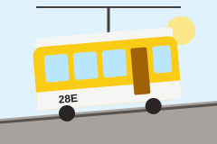

28E Martim Moniz – Campo de Ourique
A linha mais famosa da cidade. Atravessa a Graça, Alfama, a Baixa, o Chiado e a Estrela, em ruas tão estreitas que quase se toca nas fachadas. Usa os elétricos clássicos, chamados "remodelados".

Amarelos que Sobem a Cidade
Há mais de cem anos que os elétricos amarelos sobem e descem as colinas de Lisboa. São um meio de transporte para quem vive na cidade e, ao mesmo tempo, um dos símbolos mais fotografados de Portugal.
A linha mais famosa da cidade. Atravessa a Graça, Alfama, a Baixa, o Chiado e a Estrela, em ruas tão estreitas que quase se toca nas fachadas. Usa os elétricos clássicos, chamados "remodelados".
Um percurso circular e curto à volta da colina do Castelo, ideal para quem quer conhecer Alfama sem se cansar a subir.
Segue junto ao rio até Belém e Algés. Usa elétricos articulados modernos, mais compridos e com mais lugares.
Uma linha tranquila e pouco conhecida dos turistas, que sobe até à Ajuda.
Voltou a funcionar em 2018, depois de mais de vinte anos parada. Liga o Chiado a Campolide, passando pelo Príncipe Real e pelas Amoreiras.
| Linha | Início | Fim | Passa por |
|---|---|---|---|
| 28E | Martim Moniz | Campo de Ourique (Prazeres) | Graça, Alfama, Baixa, Chiado, Estrela |
| 12E | Praça da Figueira | Praça da Figueira (circular) | Martim Moniz, Alfama, Sé |
| 15E | Praça da Figueira | Algés | Cais do Sodré, Alcântara, Belém |
| 18E | Cais do Sodré | Cemitério da Ajuda | Alcântara, Calvário, Ajuda |
| 24E | Praça Luís de Camões | Campolide | Príncipe Real, Rato, Amoreiras |